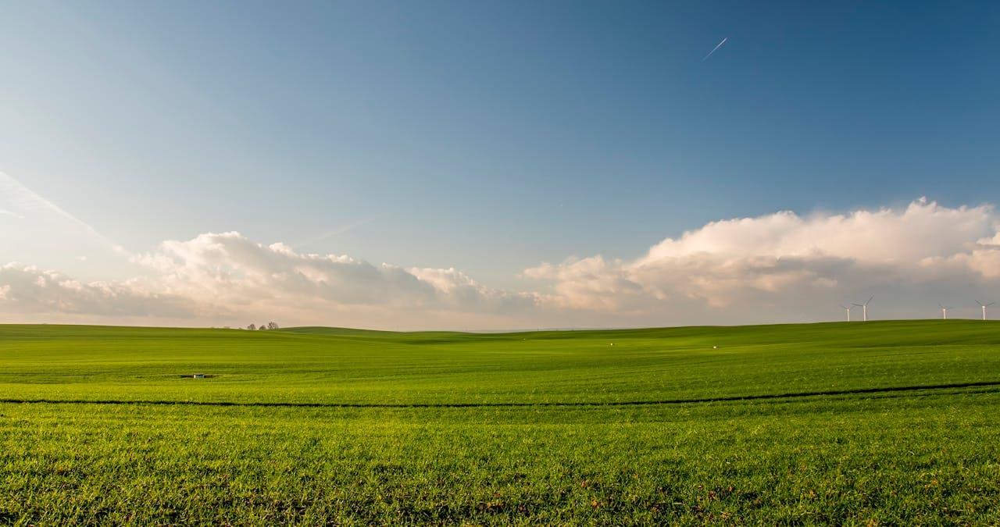

Group Two
Welcome! We are a consulting firm based in Enschede, specialising in the applications of GIS in agriculture.
On this website, we have compared the energy consumption and emissions generation of intensive and organic farming.
Can Potato Farming Contribute to Energy Transition?
Introduction and Study Area
Comparative Analysis
Additional Insights
Recommendations and Discussion
About Us
Image credit: Jahoo Clouseau, Pexels (Creative Commons)